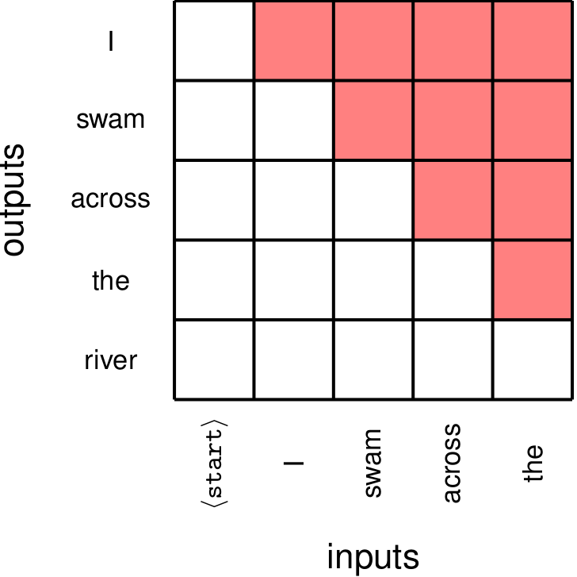
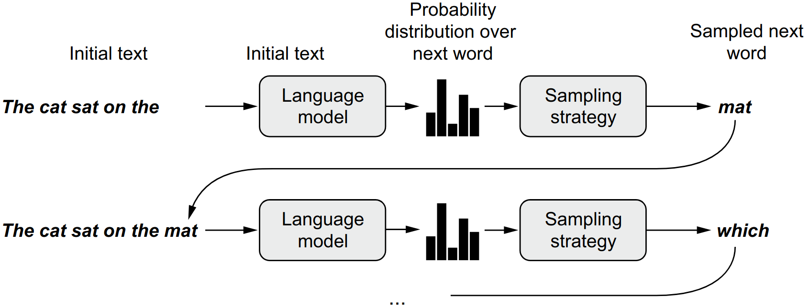
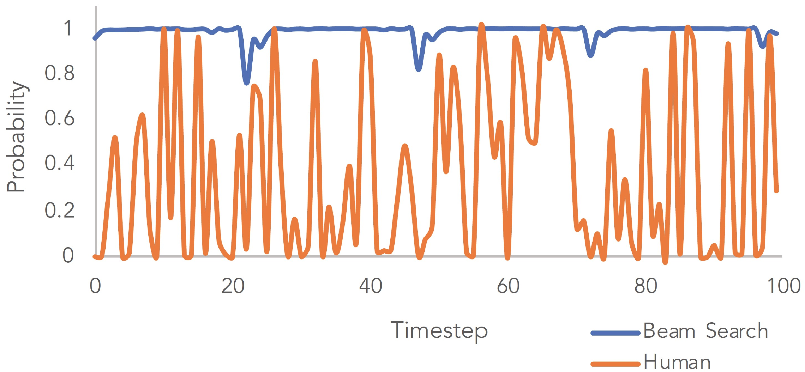
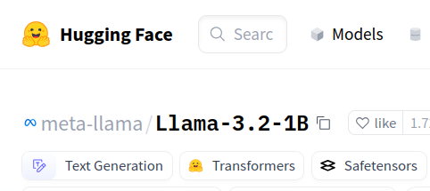
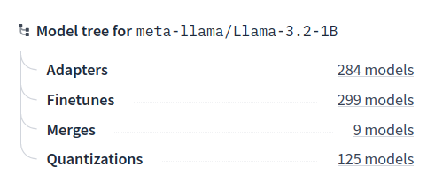
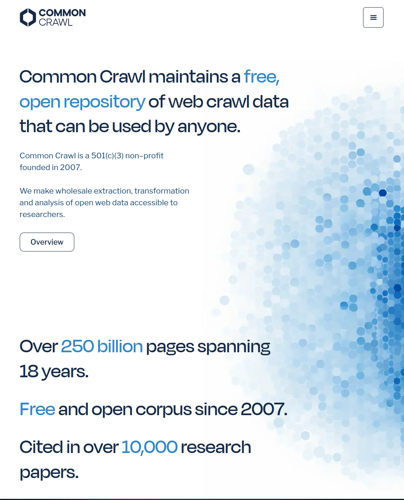
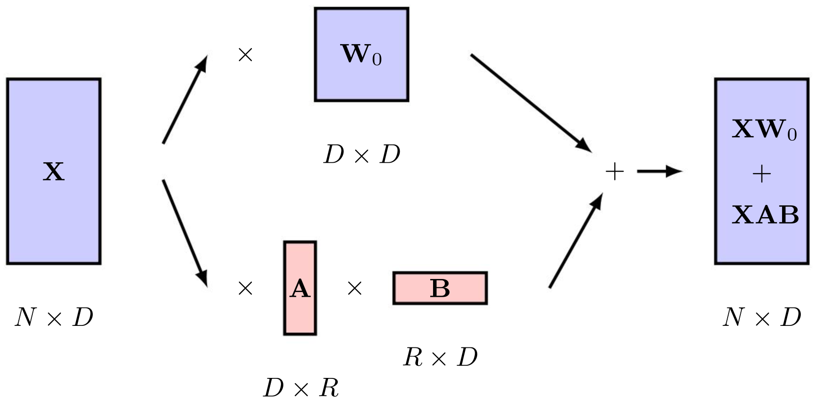
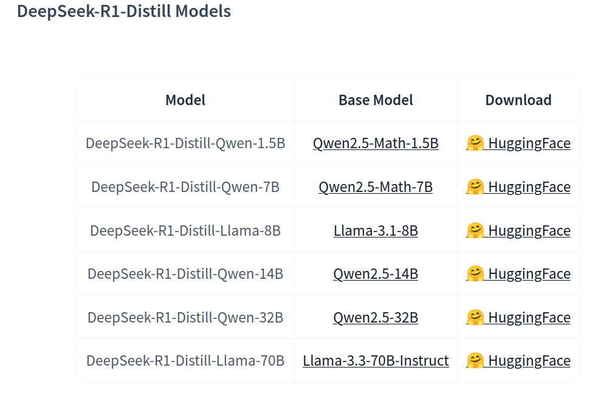

DAT255: Deep learning engineering
Lecture 17 – Large language models
Training decoder models
Decoder-type language models are next word predictors.
So we train them to do exactly this:
- Mask the end of sentences
- Use the next token as the prediction target
- Reveal token and move to next one
- Continue until end of text
Usually call the procedure masked attention or causal attention, when model is only allowed to look “backwards”.
Can train on large, unlabelled data in a self-supervised approach

Generating text from a decoder model
As for other classification models, last layer looks like
Dense(units=vocabulary_size, activation="softmax")
-> output is a vector of softmax scores for all possible tokens.
Run the model in an autoregressive loop:
- Process sequence and predict next token
- Append predicted token to the sequence
- Process extended sequence and again append predicted token
- Repeat
- (Stop if predicting end-of-sequence token)
Generating text from a decoder model
As for other classification models, last layer looks like
Dense(units=vocabulary_size, activation="softmax")
-> output is a vector of softmax scores for all possible tokens.

Deep Learning with Python, F. Chollet
Generating text from a decoder model
- Process sequence and predict next token
- Append predicted token to the sequence
- Process extended sequence and again append predicted token
- Repeat
The cat sat on the _____
floor 7.72%
bed 6.82%
couch 5.70%
ground 4.71%
edge 4.66%
Generating text from a decoder model
- Process sequence and predict next token
- Append predicted token to the sequence
- Process extended sequence and again append predicted token
- Repeat
The cat sat on the floor _____
, 25.08%
and 13.56%
. 7.38%
of 7.07%
with 6.58%
Generating text from a decoder model
- Process sequence and predict next token
- Append predicted token to the sequence
- Process extended sequence and again append predicted token
- Repeat
The cat sat on the floor, _____
and 9.41%
looking 3.23%
the 1.78%
he 1.63%
his 1.48%
Generating text from a decoder model
- Process sequence and predict next token
- Append predicted token to the sequence
- Process extended sequence and again append predicted token
- Repeat
The cat sat on the floor, and _____
the 8.40%
he 5.72%
I 4.55%
she 3.65%
his 3.56%
Generating text from a decoder model
Sampling strategies for next token:
- Greedy search: Always select token with highest score
- Makes model deterministic, always outputs same output for a given input
- Often get stuck in sequence loops
Generating text from a decoder model
Sampling strategies for next token:
Greedy search: Always select token with highest score
Beam search: Keep track of several possible branches of output sequences, and select the sentence with highest probability
- Computationally expensive
- Can also get stuck in loops


arXiv:1904.09751
Generating text from a decoder model
Sampling strategies for next token:
Greedy search: Always select token with highest score
Beam search: Keep track of several possible branches of output sequences, and select the sentence with highest probability
Sampling: Use scores as probabilities and sample randomly
- With large vocabularies the results can be nonsensical
Generating text from a decoder model
Sampling strategies for next token:
Greedy search: Always select token with highest score
Beam search: Keep track of several possible branches of output sequences, and select the sentence with highest probability
Sampling: Use scores as probabilities and sample randomly
Top-K sampling: Sample among the K tokens with highest score
Generating text from a decoder model
Sampling strategies for next token:
Greedy search: Always select token with highest score
Beam search: Keep track of several possible branches of output sequences, and select the sentence with highest probability
Sampling: Use scores as probabilities and sample randomly
Top-K sampling: Sample among the K tokens with highest score
Adjusted softmax sampling: Add a parameter T called temperature in the softmax function applied to the output
Adjusts how tokens are sampled
Softmax with temperature
Divide the logits a by temperature T in the softmax function:
\[ \small y_i = \frac{\exp(a_i/T)}{\sum_j \exp(a_j/T)} \]
Changes the distribution we sample from.
- Low T:
Give highest score to the most likely token- More determinism
- High T:
Give more equals scores to all tokens- More randomness / creativity
Large language models (LLMs)
LLM: language model with \(\small\gtrsim 10^9\) (1 billion) parameters
Training LLMs
Typical training procedure:
Self-supervised pre-training
A general model that can be subsequently fine-tuned on different tasks is called a foundation model
Cost: $1 million to $100 million
Supervised fine-tuning
Adapt to more specific uses, such as
- Chat / Question answering
- Chain-of-thought reasoning
- Domain-specific used
Cost: Depends
Continuous fine-tuning
Fine-tune an already fine-tuned model
Cost: $1 to $1000


Training data
As always, key to a good model is data.
Pre-training:
Data scraped from …
- Wikipedia (multi-language)
- GitHub (code)
- ArXiv (academic text)
- StackOverflow (Q&A)
- Reddit etc. (forums)
- Project Gutenberg (books)
See e.g. Common Crawl

Training data
As always, key to a good model is data.
Pre-training:
Data scraped from …
- Wikipedia (multi-language)
- GitHub (code)
- ArXiv (academic text)
- StackOverflow (Q&A)
- Reddit etc. (forums)
- Project Gutenberg (books)
See e.g. Common Crawl
Fine-tuning:
Now we need annotated data
- Specific datasets for question answering
- Reinforcement learning from human feedback (RLHF)
Exact training data are business secrets (even for open-sourced models)
Distributed training
Once the model can’t fit on a single GPU, things get more complicated
(for instance the full Llama 3.1 needs 3.3TB VRAM for training)
What can be split and parallelised?
- Data: Run different batches in parallel
- Weights: Distribute weight matrices over separate GPUs
- Layers: Distribute different layers over separate GPUs
- Sequences: Partition the input data sequences
Update entire model after each training step
TensorFlow implements a set of methods for distributed training, while Hugging Face offers advanced ones
Supervised fine-tuning
A pre-trained model can only append text to an input.
Making a useful chatbot requires instruction training
On the Hugging Face model hub you will often find two variants of the same model:
meta-llama/Llama-3.2-3B
meta-llama/Llama-3.2-3B-Instruct
The Llama 3.2 collection of multilingual large language models (LLMs) is a collection of pretrained and instruction-tuned generative models in 1B and 3B sizes (…)
LLM fine-tuning with limited resources
Full model fine-tuning can be problematic for two reasons:
- Hardware requirements (mainly VRAM)
- Risk of catastrophic forgetting (https://arxiv.org/abs/1312.6211)
Useful techniques:
Prompt tuning:
Add a small trainable model before the LLM, which outputs learned, task-specific tokens
Low-rank adaptation (LoRA):
Add small traininable layers in parallel with the existing attention layers

Low-rank adaptation (LoRA)

Keep original weight matrix \(\small W\) frozen
Train new (small) matrices \(\small A\) and \(\small B\)
- Adds \(\small 2\cdot R\cdot D\) new parameters (compared to \(\small D^2\) in \(\small W\))
Quantization
Reduce memory cost of running inference by reducing numerical precision in weights and activations
- Can store
float32asfloat16without much modification - Can store
float32asint8for use on embedded systems (requires more modification)
Modern quantisation schemes for LLMs are more extreme:
Go down to anywhere between 6 to 2 bit
Example:
DeepSeek-R1-Q4_K_M.gguf
Q{bits per weight}_{type}_{variant}
| Scheme | Compression ratio (relative to f32) |
Performance |
|---|---|---|
Q8_0 |
1:4 | High quality |
Q4_K_M |
1:8 | Medium quality |
Q3_K_M |
1:11 | Low quality |
Knowledge distillation
Train a small model to mimic the output of a bigger one:
Use the output of the bigger model as labels to supervise the smaller model

https://arxiv.org/abs/2305.02301
Knowledge distillation
Train a small model to mimic the output of a bigger one:
Use the output of the bigger model as labels to supervise the smaller model
